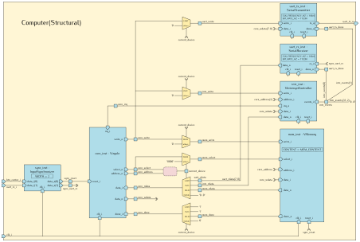

Dans cette activité, nous allons assembler les éléments d’un ordinateur
minimal comprenant les éléments suivants :
- Un processeur.
- De la mémoire.
- Un contrôleur d’interruptions.
- Un récepteur série.
- Un transmetteur série.
Dans les étapes suivantes, nous ajouterons de nouveaux éléments.
Créer un projet Vivado
Voici la liste des fichiers sources VHDL que nous utiliserons dans cette activité.
Tous ces fichiers sont situés dans des sous-dossiers de CoCiNum/src/vhdl.
| Sous-dossier |
Fichier |
Rôle |
InputSynchronizer |
InputSynchronizer.vhd |
Une entité pour synchroniser les entrées du circuit. |
UART |
SerialReceiver.vhd |
Un récepteur série asynchrone. |
UART |
SerialTransmitter.vhd |
Un transmetteur série asynchrone. |
Virgule |
Virgule_pkg.vhd |
Définitions de types et de constantes pour travailler avec le processeur Virgule. |
Virgule |
Virgule-precompiled.vhd |
Une version précompilée du processeur Virgule. |
Virgule |
VMemory.vhd |
De la mémoire vive pour le processeur Virgule. |
Virgule |
VInterruptController.vhd |
Un contrôleur d’interruptions pour le processeur Virgule. |
Computer |
Computer_pkg.vhd |
Définitions de constantes pour l’entité Computer. |
Computer |
Computer.vhd |
L’entité Computer et son architecture à compléter. |
Computer |
Loader_pkg.vhd |
Un programme de démarrage pour l’entité Computer. |
Basys3 |
Basys3_Buttons.xdc |
Fichier de contraintes pour Vivado, définition des boutons-poussoirs. |
Basys3 |
Basys3_Clock.xdc |
Fichier de contraintes pour Vivado, définition de l’horloge. |
Basys3 |
Basys3_UART.xdc |
Fichier de contraintes pour Vivado, brochage de l’interface série. |
Nous ne fournissons pas le code source du processeur Virgule.
Nous nous réservons la possibilité d’organiser des activités pratiques où
les participants développeraient eux-mêmes le processeur.
Le fichier Virgule-precompiled.vhd contient du code VHDL qui a fait l’objet
d’une première étape de synthèse logique.
Il n’est pas destiné à être lu par un être humain.
Si vous ne l’avez pas encore fait, démarrez Vivado à l’aide des commandes suivantes :
cd $HOME/CoCiNum
./scripts/vivado
Créez un nouveau projet en renseignant les informations suivantes :
| Page |
Champ ou action |
Valeur |
| Project Name |
Project name |
Computer |
|
Project location |
CoCiNum/vivado |
|
Create project subdirectory |
Oui |
| Project Type |
|
RTL Project |
| Add Sources |
Add Files |
Fichiers .vhd dans le tableau précédent |
|
Copy sources into project |
Non |
| Add Constraints |
Add Files |
Fichiers .xdc dans le tableau précédent |
|
Copy constraints files into project |
Non |
| Default Part |
Family |
Artix-7 |
|
Package |
cpg236 |
|
Speed |
-1 |
|
Part |
xc7a35tcpg236-1 |
Processeur
L’entité Virgule possède les ports suivants :
| Port |
Direction |
Type |
Rôle |
clk_i |
Entrée |
Logique |
Le signal d’horloge global |
reset_i |
Entrée |
Logique |
La commande de réinitialisation |
address_o |
Sortie |
Vecteur de 32 bits |
Le bus d’adresses |
select_o |
Sortie |
Vecteur de 4 bits |
Sélection des octets à lire ou écrire |
write_o |
Sortie |
Logique |
La commande d’écriture |
data_i |
Entrée |
Vecteur de 32 bits |
Le bus de données en lecture |
data_o |
Sortie |
Vecteur de 32 bits |
Le bus de données en écriture |
done_i |
Entrée |
Logique |
Indicateur de fin d’une lecture ou d’une écriture |
irq_i |
Entrée |
Logique |
Demande d’interruption |
Le processeur ne fait pas de différence entre la mémoire et les périphériques.
On considère que chaque composant, mémoire ou périphérique, possède une plage d’adresses
qui lui est attribuée.
Ce point sera détaillé plus loin.
Le processeur peut lire ou écrire 1, 2 ou 4 octets simultanément.
Pour cette raison, address_o correspond à l’adresse d’un groupe de 4 octets,
et select_o indique quels octets sont concernés parmi les 4.
Pour écrire une valeur en mémoire, ou pour envoyer une valeur à un périphérique,
le processeur effectue les opérations suivantes :
- Configurer les bus pour une écriture :
- Affecter à
address_o l’adresse de destination.
- Affecter à
data_o la valeur à écrire.
- Indiquer sur
select_o quels octets il faut modifier.
- Mettre
write_o à '1'.
- Attendre que
done_i passe à '1'.
- Remettre
select_o et write_o à zéro.
Pour une lecture, le processeur effectue les opérations suivantes :
- Configurer les bus pour une lecture :
- Affecter à
address_o l’adresse source.
- Indiquer sur
select_o quels octets il faut lire.
- Attendre que
done_i passe à '1'.
- Prélever la valeur lue sur
data_i et remettre select_o à zéro.
Mémoire
L’entité VMemory décrit un bloc de mémoire vive préchargée avec un programme
et des données.
Elle possède un paramètre générique :
| Paramètre |
Type |
Rôle |
CONTENT |
Tableau de vecteurs de 32 bits |
Contenu initial de la mémoire |
Voici la liste de ses ports :
| Port |
Direction |
Type |
Rôle |
clk_i |
Entrée |
Logique |
Le signal d’horloge global |
reset_i |
Entrée |
Logique |
La commande de réinitialisation |
address_i |
Entrée |
Vecteur de 32 bits |
Le bus d’adresses |
select_i |
Entrée |
Vecteur de 4 bits |
Sélection des octets à lire ou écrire |
write_i |
Entrée |
Logique |
La commande d’écriture |
data_i |
Entrée |
Vecteur de 32 bits |
Le bus de données en écriture |
data_o |
Sortie |
Vecteur de 32 bits |
Le bus de données en lecture |
done_o |
Sortie |
Logique |
Indicateur de fin d’une lecture ou d’une écriture |
L’entité VMemory est conçue pour être implémentée avec les blocs de RAM
intégrés aux FPGA Xilinx.
Le fonctionnement de ces blocs de RAM se traduit par les durées suivantes
pour les accès :
- En lecture, 2 périodes d’horloge.
- En écriture, 1 période d’horloge.
Contrôleur d’interruptions
L’entité VInterruptController possède les ports suivants :
| Port |
Direction |
Type |
Rôle |
clk_i |
Entrée |
Logique |
Le signal d’horloge global |
reset_i |
Entrée |
Logique |
La commande de réinitialisation |
events_i |
Entrée |
Vecteur de 32 bits |
Indicateurs d’événements ou de demandes d’interruptions de chaque périphérique |
address_i |
Entrée |
Logique |
Le bus d’adresses |
write_i |
Entrée |
Logique |
La commande d’écriture |
data_i |
Entrée |
Vecteur de 32 bits |
Le bus de données en écriture |
data_o |
Sortie |
Vecteur de 32 bits |
Le bus de données en lecture |
irq_o |
Sortie |
Logique |
Demande d’interruption (interrupt request) |
Ce composant peut gérer les événements ou les demandes d’interruption de 32 sources
connectées à chaque bit de son entrée events_i.
Il transmet les demandes au processeur sur irq_o.
VInterruptController est aussi un périphérique que le processeur peut
configurer et interroger.
Son entrée address_i est sur un bit car il n’y a que deux registres :
address_i |
Registre |
Rôle |
'0' |
mask_reg |
Masque de 32 bits qui indiquent quelles sources d’interruptions sont autorisées. |
'1' |
events_reg |
Indicateurs de chaque événement en attente de traitement. |
Typiquement, dans un programme qui gère des interruptions, on
configurera mask_reg pour choisir à quels événements on souhaite réagir.
À chaque fois qu’une interruption sera demandée :
- On lira
events_reg pour identifier le type d’événement à traiter.
- On écrira un
'1' dans le bit du registre events_reg correspondant à cet évenement pour indiquer que celui-ci a été traité.
Interface série asynchrone
Les entités SerialTransmitter et SerialReceiver seront utilisées
ensemble pour réaliser une interface de communication série communément appelée
UART (Universal Asynchronous Receiver Transmitter).
Ils permettront au processeur de communiquer avec votre PC à
travers une interface série/USB.
Les deux entités possèdent les paramètres génériques suivants qui leur permettent
de régler leurs diviseurs de fréquence internes :
| Paramètre |
Type |
Rôle |
CLK_FREQUENCY_HZ |
Entier |
La fréquence de l’horloge clk_i, en Hz |
BIT_RATE_HZ |
Entier |
La vitesse de communication série, en bits par seconde |
L’entité SerialTransmitter possède les ports suivants :
| Port |
Direction |
Type |
Rôle |
clk_i |
Entrée |
Logique |
Le signal d’horloge global |
reset_i |
Entrée |
Logique |
La commande de réinitialisation |
write_i |
Entrée |
Logique |
La commande de démarrage d’une transmission |
data_i |
Entrée |
Vecteur de 8 bits |
L’octet à envoyer |
done_o |
Sortie |
Logique |
Indicateur de fin de transmission |
tx_o |
Sortie |
Logique |
La ligne de transmission série |
L’entité SerialReceiver possède les ports suivants :
| Port |
Direction |
Type |
Rôle |
clk_i |
Entrée |
Logique |
Le signal d’horloge global |
reset_i |
Entrée |
Logique |
La commande de réinitialisation |
rx_i |
Entrée |
Logique |
La ligne de réception série |
data_o |
Entrée |
Vecteur de 8 bits |
L’octet reçu |
done_o |
Sortie |
Logique |
Indicateur de fin de réception |
Synchronisation des entrées
L’entité InputSynchronizer est utilisée pour éviter le problème de
métastabilité
qui peut se produire lors de la mémorisation de signaux dont le timing n’est
pas maîtrisé.
Elle est utile dans deux situations :
- dans un circuit composé de différentes parties qui doivent échanger des informations, mais qui sont synchronisées par des signaux d’horloge différents,
- dans un circuit qui possède des entrées asynchrones.
L’entité InputSynchronizer possède un paramètre générique :
| Paramètre |
Type |
Rôle |
WIDTH |
Entier |
Le nombre d’entrées logiques à synchroniser |
Voici la liste de ses ports :
| Port |
Direction |
Type |
Rôle |
clk_i |
Entrée |
Logique |
Le signal d’horloge global |
data_i |
Entrée |
Vecteur de WIDTH bits |
Les données à synchroniser |
data_o |
Sortie |
Vecteur de WIDTH bits |
Les données synchronisées |
En interne, InputSynchronizer fait entrer chaque bit de data_i
dans un registre à décalage composé de deux bascules D.
Vivado devra s’efforcer de placer chaque paire de bascules dans la même tranche du FPGA.
Entité principale
Voici les ports de l’entité Computer :
| Port |
Direction |
Type |
Rôle |
clk_i |
Entrée |
Logique |
Le signal d’horloge global |
btn_center_i |
Entrée |
Logique |
Le bouton de réinitialisation |
uart_rx_i |
Entrée |
Logique |
La ligne de réception série |
uart_tx_o |
Sortie |
Logique |
La ligne de transmission série |
Cette entité sera associée à une architecture Structural représentée
ci-dessous.

Compléter l’architecture
Dans le fichier Computer.vhd, ajoutez les instructions d’instanciation
correspondant au schéma ci-dessus.
Le contenu de la mémoire mem_inst est défini par la constante MEM_CONTENT
dans le paquetage Computer_pkg.
Cette constante elle-même renvoie au contenu du paquetage Loader_pkg.
Lors d’une opération de lecture ou d’écriture, le décodage d’adresse consiste
à identifier à quel périphérique correspond l’adresse courante.
Le signal current_device peut prendre l’une des valeurs définies par le
type énuméré device_t dans le paquetage Computer_pkg.
Affectez le signal current_device de manière à respecter les règles suivantes :
core_select |
core_address |
→ |
current_device |
"0000" |
– |
→ |
NONE |
| autres |
MEM_ADDRESS à MEM_ADDRESS + MEM_SIZE - 1 |
→ |
MEM |
| autres |
INTC_ADDRESS à INTC_ADDRESS + INTC_SIZE - 1 |
→ |
INTC |
| autres |
UART_ADDRESS |
→ |
UART |
| autres |
autres |
→ |
NONE |
Affectez les signaux uart_write, intc_write, mem_write, mem_select,
core_rdata et core_done.
Si vous écrivez la comparaison suivante, par exemple, vous obtiendrez un message
d’erreur indiquant que l’opérateur >= n’existe pas pour les types de
core_address et MEM_ADDRESS.
core_address >= MEM_ADDRESS
En effet, le signal core_address est de type word_t, c’est-à-dire un
std_logic_vector de 32 bits, tandis que MEM_ADDRESS est de type
unsigned (voir à ce sujet la section Types binaires pour représenter des nombres).
Pour pouvoir les comparer, il faut effectuer une Conversion de type
de la manière suivante :
unsigned(core_address) >= MEM_ADDRESS
Simuler le fonctionnement du système
Démarrez le simulateur et exécutez les commandes ci-dessous.
restart
add_force -repeat_every 10ns clk_i 0 0ns 1 5ns
add_force btn_center_i 1 0ns 0 40ns
run 400us
La simulation dure 400 microsecondes.
Au bout de 160 microsecondes, le programme préchargé dans la mémoire commence
à transmettre des caractères sur la liaison série.
On doit voir la sortie uart_tx_o passer à zéro.
Si ce n’est pas le cas, observez les chronogrammes et vérifiez la cohérence
entre les signaux core_address, core_write, current_device, uart_write,
intc_write, etc.
- Ouvrez la fenêtre des paramètres de Vivado : Flow Navigator → Project Manager → Settings.

- Dans la catégorie Synthesis, sous le titre Options, le champ Strategy propose une liste des stratégies
d’optimisation disponibles à l’étape de synthèse logique du circuit.
Choisissez la stratégie Flow RuntimeOptimized.

- Dans la catégorie Implementation, sous le titre Options, modifiez le champ Strategy en choisissant
également la stratégie Flow RuntimeOptimized.

Synthétiser et implémenter le circuit
Exécutez cette commande dans la console Tcl pour réduire la gravité de
certains messages concernant les affectations de broches :
set_msg_config -id {Common 17-55} -new_severity {WARNING}
Générez le fichier binaire à charger dans le FPGA :
Flow Navigator → Program and Debug → Generate Bitstream.

Vivado va enchaîner toutes les étapes d’analyse des fichiers sources, de synthèse logique, de placement et routage,
pour terminer par la génération d’un fichier binaire à charger dans le FPGA.
À la fin des opérations, la boîte de dialogue Bitstream Generation Completed s’affiche.
Choisissez Open Hardware Manager.
Vérifiez que l’interrupteur d’alimentation de votre carte Basys3 est en position OFF.
Le cavalier situé à côté de l’interrupteur doit être en position USB.
Reliez le connecteur micro-USB de la carte à un port USB de votre PC.
Mettez la carte sous tension.
En haut du panneau Hardware Manager, pressez Open target et choisissez Auto Connect.

Pressez ensuite Program Device.

Exécuter un programme sur notre ordinateur
Nous allons utiliser le logiciel GTKTerm pour communiquer avec
l’ordinateur embarqué dans notre FPGA par liaison série sur USB :
cd $HOME/CoCiNum
./scripts/gtkterm
Dans le menu Configuration, activez l’option CR LF auto.
GTKTerm est déjà configuré pour utiliser le port série /dev/ttyUSB1
avec 8 bits de données, 1 bit d’arrêt, pas de contrôle de parité.
Forcez un redémarrage du processeur en pressant le bouton-poussoir central
de la carte Basys3.
La fenêtre GTKTerm doit à présent afficher le texte :
\\// This is the Virgule program loader. Please send an hex file to execute...
Que s’est-il passé ?
Le circuit que vous avez synthétisé contient une mémoire (VMemory)
préchargée avec un programme que nous avons préparé pour vous.
Ce programme est représenté en hexadécimal dans le paquetage Loader_pkg.
Son code source est entièrement disponible dans le dossier
CoCiNum/src/c/Loader.
Au démarrage, le processeur Virgule commence à lire et exécuter les
instructions de ce programme.
Elles consistent à effectuer les opérations suivantes :
- Envoyer la chaîne
\\// This is the Virgule program loader... à travers
le transmetteur série (SerialTransmitter).
Cette chaîne est reçue par votre PC et affichée par GTKTerm.
- Recevoir une chaine de caractères contenant un programme RISC-V au format
Intel HEX
à travers le récepteur série (
SerialReceiver),
la décoder et écrire le résultat en mémoire à partir de l’adresse 0.
- Poursuivre l’exécution en sautant à l’adresse 0.
Pour continuer, nous devons donc créer un programme, le compiler et l’envoyer
par liaison série vers le FPGA.
Créer et compiler un nouveau programme
Nous allons créer un nouveau programme en langage C.
Dans un terminal, exécutez les commandes suivantes :
cd $HOME/CoCiNum/src/c
mkdir Echo
cd Echo
gedit Echo.c &
Ce programme réalisera un écho en affichant chacun des caractères que vous
frappez au clavier, jusqu’à ce que l’utilisateur presse la touche Entrée :
#include <stdint.h>
#define INTC_ADDR 0x81000000
#define UART_ADDR 0x82000000
#define INTC_MASK_REG INTC_ADDR
#define INTC_EVENTS_REG (INTC_ADDR + 4)
#define UART_DATA_REG UART_ADDR
#define INTC_EVENTS_UART_RX 1
#define INTC_EVENTS_UART_TX 2
static inline uint8_t read8(uint32_t addr) {
return *(volatile uint8_t*)addr;
}
static inline void write8(uint32_t addr, uint8_t val) {
*(uint8_t*)addr = val;
}
static inline uint32_t read32(uint32_t addr) {
return *(volatile uint32_t*)addr;
}
static inline void write32(uint32_t addr, uint32_t val) {
*(uint32_t*)addr = val;
}
void UART_send_char(char c) {
write8(UART_DATA_REG, c);
while (!(read32(INTC_EVENTS_REG) & INTC_EVENTS_UART_TX));
write32(INTC_EVENTS_REG, INTC_EVENTS_UART_TX);
}
void UART_send_string(const char *str) {
while (*str) {
UART_send_char(*str);
str ++;
}
}
char UART_receive_char(void) {
while (!(read32(INTC_EVENTS_REG) & INTC_EVENTS_UART_RX));
write32(INTC_EVENTS_REG, INTC_EVENTS_UART_RX);
return read8(UART_DATA_REG);
}
void main(void) {
UART_send_string("Echo> ");
char c;
do {
c = UART_receive_char();
UART_send_char(c);
} while (c != '\r');
UART_send_string("\nBye!\n");
}
Compilez ce programme :
cd $HOME/CoCiNum/src/c/Echo
riscv64-unknown-elf-gcc -march=rv32i -mabi=ilp32 -ffreestanding -nostdlib -T ../../../scripts/Virgule.ld -o Echo.elf ../../asm/Startup/Startup.s Echo.c
riscv64-unknown-elf-objcopy -O ihex Echo.elf Echo.hex
Les éléments des deux dernières lignes de commande sont :
| Commande ou argument |
Signification |
riscv64-unknown-elf-gcc |
Invoquer le compilateur GCC pour RISC-V |
-march=rv32i |
Utiliser le jeu d’instructions de base RV32I de l’architecture RISC-V |
-mabi=ilp32 |
Utiliser les conventions d’appel de sous-programmes pour RISC-V 32 bits |
-ffreestanding |
Le programme à compiler n’utilise aucune fonction prédéfinie |
-nostdlib |
Le programme à compiler n’utilise pas la bibliothèque standard C |
-T ../../../scripts/Virgule.ld |
Utiliser le fichier de définition du plan mémoire Virgule.ld |
-o Echo.elf |
Le programme exécutable s’appellera Echo.elf |
../../asm/Startup/Startup.s |
Assembler le programme de démarrage Startup.s |
Echo.c |
Compiler le programme Echo.c |
| Commande ou argument |
Signification |
riscv64-unknown-elf-objcopy |
Invoquer l’outil de conversion de formats de programmes |
-O ihex |
Créer un fichier au format Intel HEX |
Echo.elf |
Convertir le fichier Echo.elf |
Echo.hex |
Écrire le résultat dans le fichier Echo.hex |
En cas de problème à l’exécution du compilateur C, vous pouvez créer vous-même
le fichier Echo.hex avec le contenu suivant :
:100000006F0040016F00C0004800000000000000C9
:1000100073002030970100009381C11A170101007D
:10002000130141FE9302001C1303001C63F86200DD
:1000300023A0020093824200E3EC62FEEF00C011B5
:100040009702000083A282FC67800200000000008B
:100050000000000000000000130101FE232E8100BB
:100060001304010293070500A307F4FEB7070082FB
:100070000347F4FE2380E70013000000B707008168
:100080009387470083A7070093F72700E38807FEBD
:10009000B7070081938747001307200023A0E700DC
:1000A000130000000324C101130101026780000056
:1000B000130101FE232E1100232C810013040102E1
:1000C0002326A4FE6F0000028327C4FE83C7070017
:1000D00013850700EFF05FF88327C4FE93871700AE
:1000E0002326F4FE8327C4FE83C70700E39E07FC94
:1000F00013000000130000008320C10103248101CC
:100100001301010267800000130101FF2326810013
:100110001304010113000000B70700819387470013
:1001200083A7070093F71700E38807FEB70700814E
:10013000938747001307100023A0E700B70700824A
:1001400083C7070093F7F70F138507000324C10047
:100150001301010167800000130101FE232E11002D
:10016000232C8100130401021305001BEFF05FF440
:10017000EFF09FF993070500A307F4FE8347F4FE11
:1001800013850700EFF05FED0347F4FE9307D000FF
:10019000E310F7FE1305801BEFF09FF11300000042
:1001A0008320C10103248101130101026780000043
:0E01B0004563686F3E200000427965210A0019
:00000001FF
Dans la fenêtre terminal de Linux qui vous a servi à lancer GTKTerm,
exécutez la commande :
cat $HOME/CoCiNum/src/c/Echo/Echo.hex > /dev/ttyUSB1
Dans le terminal, vous devez à présent voir :
\\// Starting user program...
Echo>
Tapez quelques caractères au clavier. Ils doivent s’afficher à
la suite de la ligne Echo > :
\\// Starting user program...
Echo> Je viens de taper ceci
Pressez la touche Entrée. Le programme doit se terminer en affichant
le message Bye!.
Ensuite, il rend la main au programme de chargement qui attend l’envoi
d’un nouveau programme :
\\// Starting user program...
Echo> Je viens de taper ceci
Bye!
\\// This is the Virgule program loader. Please send an hex file to execute...
{kind=link}